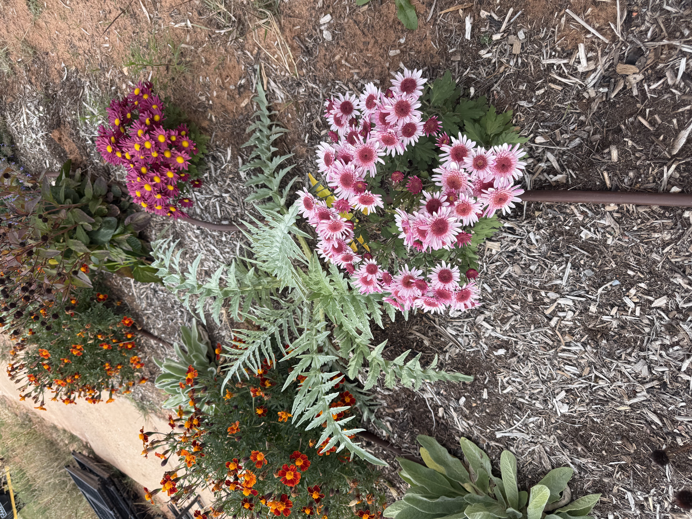

Why Grow Flowers Among Your Vegetables?

A vegetable garden can be more than a place to grow food. By adding flowers among your vegetables, you can create a beautiful, diverse garden that welcomes pollinators, supports beneficial insects, and brings color and joy to your growing space.
Welcome the Pollinators
Flowers attract bees, butterflies, and other pollinating insects into your garden. Many vegetables, including squash, cucumbers, and pumpkins, depend on pollinators to produce fruit. By growing flowers near your vegetables, you can help support these important garden visitors while creating a colorful and inviting growing space.
Encourage Beneficial Insects
A healthy garden is home to many helpful insects. Ladybugs and lacewings feed on pests such as aphids, helping gardeners manage unwanted insects naturally. Flowers such as sweet alyssum, calendula, and yarrow can provide nectar and other resources for beneficial insects. By including a variety of flowering plants, you can encourage a more balanced garden ecosystem.
Choose Flowers That Complement Your Vegetables
Some flowers are especially useful additions to a vegetable garden. Calendula brings cheerful color and provides nectar for pollinators. Sweet alyssum attracts small beneficial insects, while zinnias offer colorful blooms that butterflies and bees may visit. Choose flowers suited to your climate, and consider their mature size so they do not crowd or shade your vegetables. A mixture of flower shapes and blooming seasons can help support garden visitors throughout the growing season.
Start Small and Let Your Garden Grow
You don't need a large garden to enjoy the benefits of growing flowers and vegetables together. Begin by adding a few flowering plants among your vegetables or along the edges of your garden beds. Observe which insects visit, notice how your plants respond, and discover what grows best in your space. With each season, you'll gain knowledge and confidence while creating a garden that is both productive and beautiful.
A garden is more than a place to grow food. It is a place to learn, create, and find joy in the beauty of nature.